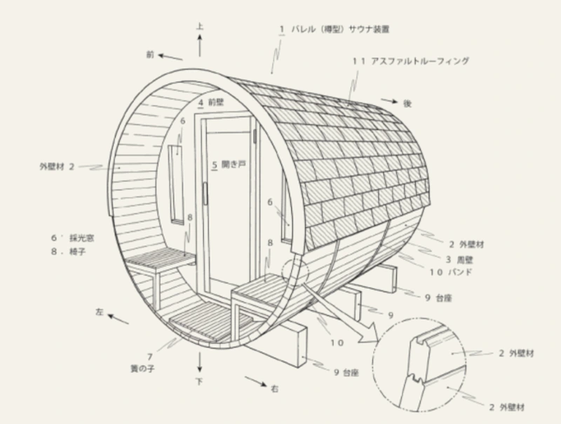

板に、突起と溝を。
外壁材の接合部に凹凸を設け、隣り合う板同士が二重にかみ合う形に加工します。
特許技術 Rink ORIGINAL STRUCTURE
Mitsunaミツナ構造
木の動きを考えた、独自のかみ合わせ。
屋外でも、心地よい熱と湿度を保つために。

THE DIFFERENCE
Mitsunaは、丸い側壁の板をつなぐ構造です。見た目には小さな違いが、空気の通り方を変えます。

板の境目は、なだらかな弧を描きます。木が縮んで隙間ができると、そこから空気が通ります。

板の突起が、隣の板の溝に入ります。二重のかみ合わせが、継ぎ目からの空気の流れを抑えます。
DESIGNED FOR WOOD
屋外では、季節や湿度によって木材が伸び縮みします。
その自然な変化に、継ぎ手の形で向き合います。
外壁材の接合部に凹凸を設け、隣り合う板同士が二重にかみ合う形に加工します。
木材が膨張・収縮したときも、かみ合わせが継ぎ目を通る空気の流れを抑えやすくします。
サウナ室内の熱や湿度を逃がしにくくし、ロウリュのある心地よい時間を支えます。

Mitsuna構造は曲面側壁の継ぎ手に関する技術です。前後壁の三重積層や窓・扉の仕様とは異なります。天然木の状態を保つには、適切な使用と日頃のお手入れが必要です。
THE WHOLE SAUNA
国産ヒノキ、前後壁の三重積層、10年保証。
一台を支える工夫も、あわせてご覧ください。